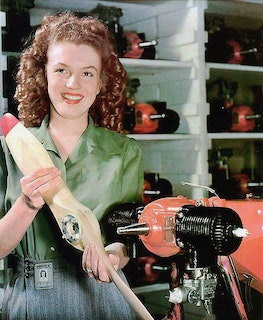

In April 1944, Dougherty was shipped out to the Pacific, where he remained for most of the next two years.[53] Monroe moved in with her in-laws and began a job at the Radioplane Company, a munitions factory in Van Nuys.[53] In late 1944, she met photographer David Conover, who had been sent by the U.S. Army Air Forces' First Motion Picture Unit to the factory to shoot morale-boosting pictures of female workers.[54] Although none of her pictures were used, she quit working at the factory in January 1945 and began modeling for Conover and his friends.[55][56] Defying her deployed husband, she moved on her own and signed a contract with the Blue Book Model Agency in August 1945.
The agency deemed Monroe's figure more suitable for pin-up than high fashion modeling, and she was featured mostly in advertisements and men's magazines.[58] To make herself more employable, she straightened her hair and dyed it blonde.[59] According to Emmeline Snively, the agency's owner, Monroe quickly became one of its most ambitious and hard-working models; by early 1946, she had appeared on 33 magazine covers for publications such as Pageant, U.S. Camera, Laff, and Peek.[60] As a model, Monroe occasionally used the pseudonym Jean Norman.